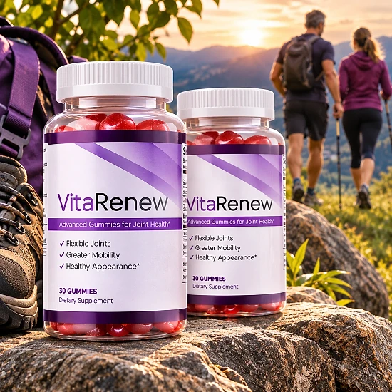
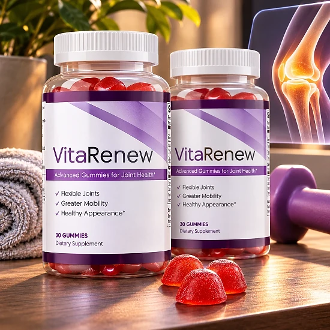
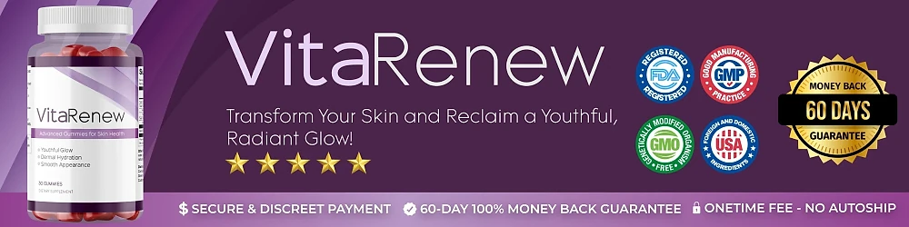

What Is VitaRenew And How Does It Work?
VitaRenew is a daily gummy supplement designed to support skin health, natural hydration, and a youthful appearance for adults who feel that age, environmental stress, and daily wear have started to affect the way their skin looks and feels — through a simple, natural routine, without complicated skincare regimens or harsh topical treatments.
It utilizes Apple Cider Vinegar as its core ingredient, a compound with a long history of use in traditional wellness practices. According to the official website, the formula is built around the idea that supporting the body from the inside can help promote a healthier, more radiant complexion over time.
The approach behind VitaRenew centers on internal nourishment for the skin. Rather than relying only on external creams and serums, the brand explains that delivering targeted nutrients through a daily gummy helps the body support its own processes for dermal hydration, a youthful glow, and a smooth appearance from within.
Rather than acting as an aggressive treatment, VitaRenew focuses on consistent daily support. The official website explains that the formula was designed to work gradually, complementing a healthy lifestyle and regular skincare habits rather than replacing them.
With consistent daily use, the official website suggests that users may begin to notice improvements in skin texture, hydration, and overall appearance over time. As with any supplement, individual results may vary, and the brand recommends using the gummies consistently for the best experience.
From a practical standpoint, VitaRenew comes as a bottle of 30 gummies, one gummy a day, so each bottle covers about a month. The gummies are designed to fit into any daily routine without added complexity, and each bottle has a shelf life of up to 24 months from the manufacturing date.
According to the official website, VitaRenew is manufactured in a facility that is registered with the FDA in the United States. It is a dietary supplement, not intended to diagnose, treat, cure, or prevent any disease, and it is meant to complement a healthy lifestyle, not replace professional skincare advice.
VitaRenew Ingredients
Every gummy of VitaRenew contains Apple Cider Vinegar (250 mg), chosen to support skin health, hydration, and a youthful appearance as part of a consistent daily routine:
Apple Cider Vinegar (250 mg): A natural compound produced by fermenting apple juice, traditionally associated with supporting healthy digestion, skin clarity, and overall wellness. It contains acetic acid and naturally occurring compounds that have been used for generations in wellness practices around the world.
The official label lists Apple Cider Vinegar at 250 mg per gummy as the primary active ingredient. The complete list of other ingredients, including the gummy base and flavoring, is printed on the product label that ships with every bottle.
Together with the gummy format, this ingredient is designed to deliver daily skin support in a convenient, easy-to-take form. No pills to swallow, no powders to mix — one chewable gummy a day is the full routine.
VitaRenew is designed for daily use, offering a natural, non-prescription approach to supporting skin health and a radiant appearance in an easy, chewable format.
VitaRenew Side Effects
According to the official website, VitaRenew is made with an ingredient commonly used in dietary supplements and is generally well tolerated. It is designed for adults who want a simple, balanced approach to daily skin support without harsh chemicals or complicated routines.
The formula is described as natural and straightforward, built around Apple Cider Vinegar, and the brand states that it is manufactured in a facility registered with the FDA in the United States, following Good Manufacturing Practice (GMP) guidelines.
With no widespread reports of serious side effects, VitaRenew is generally considered a well-tolerated option. Still, because it contains Apple Cider Vinegar, which is acidic in nature, anyone with a sensitive stomach or a history of acid reflux should start carefully and stop using it if they notice any discomfort. Do not exceed one gummy a day.
The official website advises that the product is not intended for individuals under 18 years of age, and anyone who is pregnant, nursing, or taking prescription medications should consult a healthcare provider before use. This is a standard precaution with any dietary supplement, and it is especially important if you have a known medical condition or are unsure about combining it with other supplements or medications.
VitaRenew Dosage
VitaRenew is meant to be taken once a day, every day, and it is designed to fit easily into a daily routine, making consistency simple and convenient. It comes as a chewable gummy, with no pills to swallow, no powders to mix, and nothing complicated to prepare.
The recommended approach, according to the official label, is to take one (1) gummy daily. Taking VitaRenew at the same time each day helps build the habit and allows its ingredient to work consistently. Each bottle contains 30 gummies, which equals about a month of use.
For best results, consistency is key. The official website encourages users to give the product adequate time to produce results, and the generous 60-day satisfaction guarantee is designed to let you try it for a full period before deciding. Individual results may vary.
There is no need for complex schedules or multi-step routines. One simple gummy a day is designed to build support gradually, alongside a balanced diet, proper hydration, and a basic skincare routine.
As with any wellness product, it's important not to exceed the recommended dosage. Store the bottle in a cool, dry place; the brand recommends using it within 24 months of the manufacturing date marked on each bottle. VitaRenew works best when used regularly, combined with healthy daily habits and adequate sun protection for the skin.
VitaRenew – Refund Policy
You can order VitaRenew with confidence, knowing that every purchase is protected by a 60-day satisfaction guarantee, counted from the date your payment is processed. This gives you time to try the gummies and decide if they deliver the support you expect.
According to the official refund policy, customers who are not fully satisfied should contact customer support within 60 days of the payment date. All bottles must be sent back, whether they are empty or unopened, and the return shipping is paid by the customer. No return label is provided, but a trackable shipping method is recommended.
How the refund process works: Send an email with the subject line "Refund Request" and your order number. The support team reviews the request and sends return instructions. Include a note with your full name, order number, and the email address used for the order. Ship the package to the return address and email the tracking ID to support.
Customer Support Contact Information: You can reach the support team at support@getvitarenew.com. The return address is 19655 E 35th Drive, Suite 100, Aurora, CO 80011, USA.
Refund Processing Time: Once the returned items are received and processed, a full refund is issued. You will receive an email confirmation, and the refund typically takes 5 to 10 business days to appear on your financial statement.
This refund policy is designed to give customers a clear and transparent experience when trying VitaRenew.
VitaRenew – Where To Buy
VitaRenew is sold through its official website, so if you decide to try it, it's important to be careful about where you purchase it. The official website is the only sales channel the manufacturer lists, and it does not point to marketplaces such as Amazon, eBay, or Walmart.
Listings on third-party platforms may look similar but cannot be verified as authentic, raising concerns about safety, quality, and ingredient freshness. Products purchased outside the official source may not be covered by the 60-day satisfaction guarantee.
For this reason, most customers recommend purchasing VitaRenew only through the official website. Buying directly from the official source ensures you receive the authentic original product, with access to customer support and the full guarantee.
To avoid counterfeit batches and ensure maximum quality, always verify that you are ordering from the official VitaRenew website before completing your purchase. The official website also provides the most up-to-date product information, ingredient details, and direct access to customer support if you have any questions before or after ordering.
To ensure you’re getting the authentic product, most users choose to visit the official website.
Is VitaRenew A Scam?
Based on what the official website discloses, VitaRenew does not appear to be a scam. It is a real product, sold through an established digital retailer, and formulated to support skin health, hydration, and a youthful appearance as part of a consistent daily routine.
The ingredient used in VitaRenew — Apple Cider Vinegar (250 mg) — is widely recognized in the wellness field and is clearly listed on the official product label. The product is manufactured in a facility registered with the FDA in the United States, following Good Manufacturing Practice (GMP) guidelines, and every bottle is clearly labeled.
In addition to its simple formula, VitaRenew provides a physical return address in Aurora, Colorado, a customer support email (support@getvitarenew.com), and a clear refund policy with a 60-day guarantee. These are signs of a brand that stands behind its product.
Results vary from person to person, and no supplement can promise a specific outcome, which is why realistic expectations and consistent use matter. The official website encourages users to give the product adequate time before judging its effectiveness.
VitaRenew is backed by a 60-day satisfaction guarantee, and the return process is clearly outlined on the official refund policy page. This policy underscores the manufacturer's commitment to customer satisfaction and product integrity.
If you're looking for a simple daily gummy to support skin health and a radiant appearance without complicated routines, VitaRenew is worth considering — especially when purchased directly from the official website.
For those who want to verify product details or check current availability, the official VitaRenew website remains the safest option.

Check Availability On Official Website
